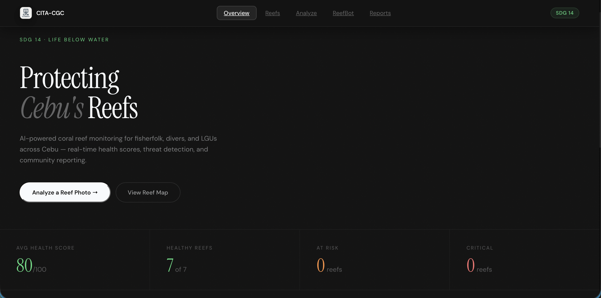

CITA-CoralGuardAI
Community-powered reef monitoring with AI-assisted reporting.
Built to support reef observation workflows, this project turns image uploads into structured health reports that are easier for communities and local decision-makers to review.
React
Supabase
Google Gemini
Leaflet
- Focused on turning image-based submissions into usable reef insights.
- Combined frontend mapping, cloud storage, and AI-assisted interpretation.
- Designed for clarity so reports feel useful beyond a demo environment.